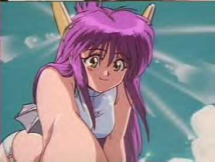

Kallis

Name:- Kallis Brea
Age:- 17
Race:- Pure Blood Saiyan
Alignment:- both, mainly evil
Siblings:- none
Marital Status:- Single
Children:- none
Moves:- Kaifuku Power "Healing Power"-The ability to completely heal people near death with hands Chou Kame Hame Ha "Ultimate Kame Hame Ha"-A very powerful Kame Hame Ha used against Piccolo in the 23rd Tenkaichi Budoukai.
Zanzouken-A popular move used throughout Dragon Ball where a person moves so fast, they leave an after-image of themselves.
Solar Flare- A blinding light used as a get away attack Instant Transmission - Instant transmits you anywhere as long as you can either sense it or know what the location look like
De La Me- A Attack that Kallis made up when she was 8. It forms a blue orb around the attacker and when u call 'DE LA ME' it fires at the opponent
Transformations:- none
Level:- 50,000
Items:- A dagger that transforms into a sword. Armour
Extra Info:- Kallis Brea is the daughter of King Alosh. So she is the Princess. She comes from planet Kenta. Once ruled by Kentanartas but her grand father who was a Saiyan took over the planet destroying the Kentanartas. She was the strongest girl warrior on her planet so her father sent her on many missions. When she was 10 she was sent to planet Earth to distroy a thief who escaped and was hideing there. While she was fighting the thief he kocked her out and she fell onto a rock hitting her in the temple which caused her to get amnesia.
When she woke up, she has no memory of her past what so ever and began her lonely walk. When she reached a town there was a jail break and when he ran past her and bumbed her she got pissed off and went Super Saiyan. At that time she didn't know her powers and how to control them so she killed him buy accident. She met a boy called AG there. He ran away when he was younger and liked to be called AG. He knew she was a saiyan so gave her the nickname SSG for SuperSaiyanGirl. They became best friends and he later on died from a sickness. SSG became a thief herself and stole to live. She also became annoying and tried to prevent fighting as she hated it. She went out with Juzako a bit but then fell I love with Morpheus. After a fight SSG was knocked out from a Mega Spirit Bomb attack and got her old memory back but lost her memory about SSG.
Kallis didn't know what had happened and plainly doesn't want to know. All she cares about is her fighting and getting back home and compleating her mission.
AIM Screen Name:- SSJ5pan87640